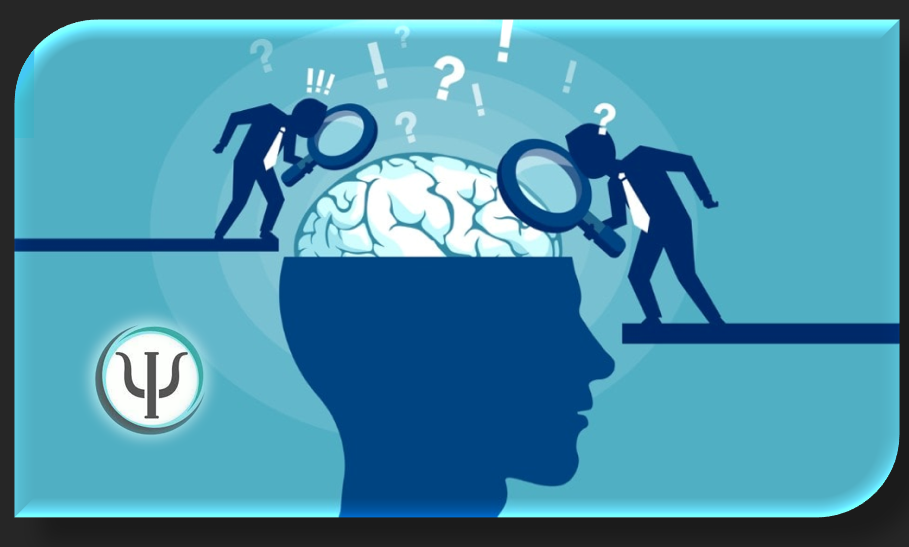

La Evaluación de Idoneidad Mental para Portación de Armas (EIMPPA) y Seguridad Privada en Costa Rica, es un proceso psicológico riguroso, realizado por profesionales certificados, que determina si una persona es apta para portar un arma de fuego al evaluar sus cualidades cognitivas, emocionales y conductuales.
La evaluación debe ser realizada por psicólogos certificados y habilitados por el Colegio de Profesionales en Psicología de Costa Rica (CPPCR).
El objetivo es garantizar la seguridad pública y la del propio solicitante, minimizando los riesgos asociados a la posesión y portación de armas de fuego.
Si desea más información puede comunicarse con nosotros.
Enviar correo